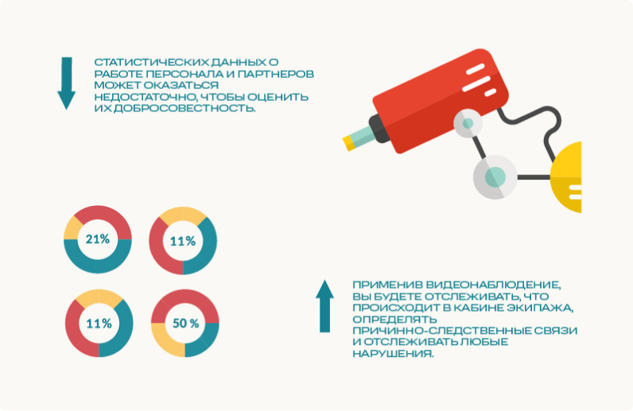

Система видеонаблюдения
Детализируйте процессы управления транспортом с помощью установленной системы видеонаблюдения. Фиксируйте возникающие проблемы на камеру и контролируйте поведение персонала во время исполнения служебных обязанностей.
Система видеонаблюдения дополнит существующие инструменты для регулирования транспортной инфраструктуры. При выявлении расхождения в показателях, всегда можно посмотреть, что происходило фактически при работе персонала.
Система подходит для:
Данные для отслеживания отображаются онлайн на удобном устройстве: планшете, смартфоне, ПК или ноутбуке.
Что обеспечивает система видеонаблюдения?
Что входит в систему видеонаблюдения?
Как система видеонаблюдения поможет сократить расходы на обслуживание транспорта?
Видеонаблюдение работает как вспомогательный инструмент в комплексной системе управления транспортом. Используя видеонаблюдение, вы решите вопрос фиксации деятельности сотрудников: камеры будут записывать видео внутри объекта мониторинга, выводить на экран и сохранять записи на сервере для дальнейшего использования.
Статистических данных о работе персонала и партнеров может оказаться недостаточно, чтобы оценить их добросовестность. Видеонаблюдение дает шанс отследить человеческий фактор и соотнести его с полученными параметрами системы.
Применив видеонаблюдение, вы будете отслеживать, что происходит в кабине экипажа, определять причинно-следственные связи и отслеживать любые нарушения.
На основе полученных данных можно изменять особенности работы флота, ж/д транспорта, автопарка или процесса бурения:
Видеонаблюдение — один из факультативных элементов по управлению транспортной инфраструктурой. Оно дополняет систему и делает её более комплексной. Но даже без видеозаписи вы можете усовершенствовать регулирование транспортом и сократить расходы на 5-25 % в месяц, внедрив только систему контроля контроля расхода топлива.
3-6 месяцев — столько понадобится времени, чтобы окупить оборудование.
Внедрить систему мониторинга можно уже сейчас с помощью программы рассрочки от компании «Технодар».